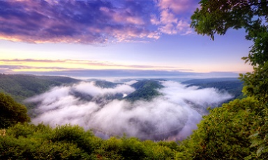
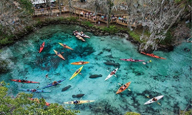
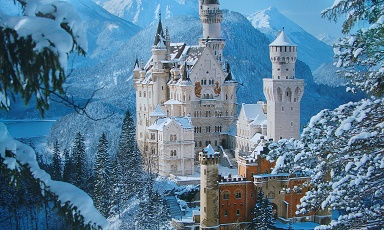

Краса - поняття суб'єктивне, проте, дивлячись на заворожливо красиві місця на Землі, створені самою природою, приходить усвідомлення того, що краса - навколо нас, і не сприймати її неможливо. Традиційні туристичні маршрути часто не охоплюють і малої частини того, що створено тандемом найталановитіших "архітекторів" - часу і природи. Огляд дивовижних за своєю естетикою і унікальних особливостей ландшафту красивих місць планети дозволить зрозуміти, що справжня краса не відрізняється доступністю, але подолання перешкод варто того, щоб побачити на власні очі справжнє диво - найкрасивіші місця в світі.